Design Rational
Service fusion design challenge
Time taken: 4hrs
The Core Bet
Christina doesn't need more recipes. She needs one doable first win.
She already has options. What she lacks is confidence that cooking will feel possible when she's tired and takeout is easier.
So onboarding answers one question: "Can I do this, this week?"
The flow starts the behaviour chain: complete onboarding, save a recipe, cook once in 7 days.
Journey Map Insight
The key moment is getting Christina to try once.
She isn't trying to become a great cook. She's trying to stop relying on takeout when she's tired and stuck.
So onboarding meets her where she is. It avoids judgement, gives her one realistic recipe, helps with groceries, and nudges her toward one night to cook.
She leaves with a plan she can actually follow.
Why I Started With Constraints, Not Goals
Most onboarding flows start with goals. I started with Christina's actual week.
"Eat healthier" sounds useful, but for 41% of her cohort, it's too vague to act on. Asking her to define it upfront adds pressure, not clarity.
So the flow asks concrete questions: how often she cooks, how she wants cooking to fit in, and how much time she has on a weeknight, including cleanup.
That last detail matters. "30-minute recipes" often ignore the mess. Christina knows that gap. Asking for the full window shows the product understands her real life.
Onboarding Decisions
Every question has to improve Christina's first recipe.
If it doesn't help match something she can actually cook this week, it doesn't belong in onboarding. It can wait for settings or come up later.
Cuisine preference sounds useful, but it's secondary. Before she builds confidence, time and skill matter more than whether the recipe is Italian or Thai.
The same logic cut questions about hard nights, restarting, and past recipe failures. They ask her to predict, reflect, or relive frustration too early.
Onboarding should reduce pressure, not add it.
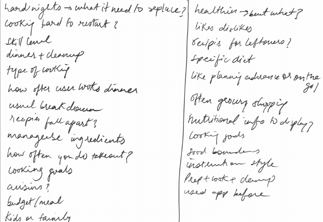
I kept the groups tight.
Constraints sit together, support preferences sit together, and food boundaries sit together. Each screen still feels like it's asking one thing, even when it covers a few angles.
In production, I'd test both versions. My hypothesis: grouped questions complete faster, while one-question screens produce more confident answers.
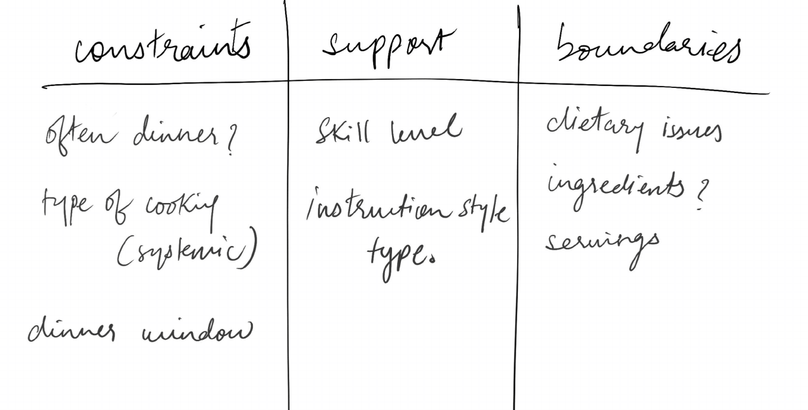
I cut gamification.
Streaks, badges, and points came up early, but they solve the wrong problem here. Gamification reinforces a behaviour that already exists. Christina hasn't cooked once yet.
Adding a streak before her first win gives her another way to fail, especially when 54% of this user base abandons recipes halfway through.
So I used a lighter commitment: a day-picker on the recipe review screen. No badge, no streak, no failure state. Just one small next step.
Gamification can come later, once she has something worth reinforcing.
I kept skill level because it gives a useful first signal.
It's imperfect. Some users underrate themselves, others overrate. So the answer seeds the first recommendation, but doesn't become a fixed label.
The copy lowers pressure: "Which skill level feels closest?" instead of "What's your cooking ability?"
I kept instruction style separate because skill and guidance needs are different.
After onboarding, the app should trust behaviour more than self-reporting: saves, completions, and mood filters.
Serving size
I kept serving size in the flow because beginners shouldn't have to scale recipes themselves.
28% of beta users cook for more than one person at least half the time. If a recipe serves 4 and Christina needs 2, she may not feel confident adjusting it.
So the app handles serving size upfront with a 1-8 selector, defaulting to 2.
The default gives her a sensible starting point and removes one more decision mid-recipe.
I kept meal prep because time has more than one solution.
For 72% of users, time is the blocker. Quick dinners solve that night. Meal prep solves the week.
This matters for users who aren't intimidated by cooking, but don't have weeknight energy. Forcing them into quick dinners would miss how they want to use the product.
Meal prep also makes grocery lists more valuable. Cooking once for multiple meals gives that feature a clearer purpose.
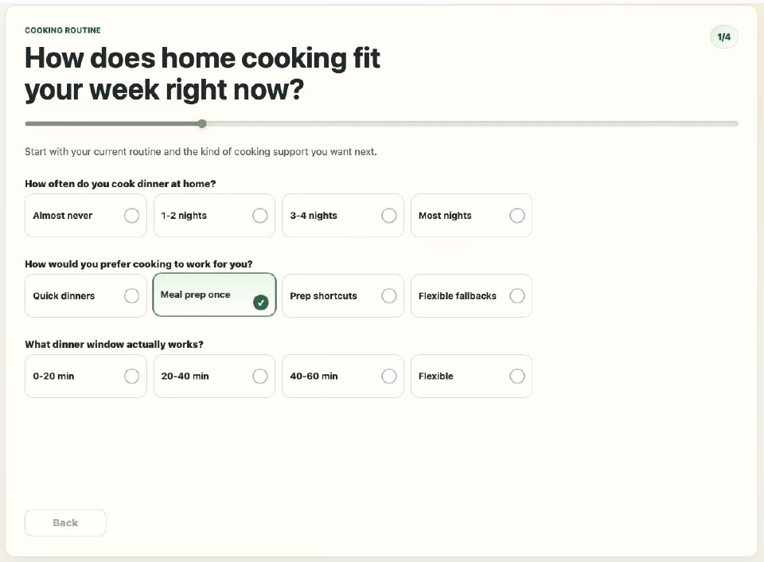
The flow ends with a recipe because "You're all set" doesn't move Christina forward.
She just shared her time, skill level, food needs, and serving size. The product should use that immediately.
The recipe screen shows what fits, why it fits, and how to start. Tags like time, ingredients, skill match, and servings make the recommendation feel earned, not random.
She ends onboarding with proof, not a confirmation screen.
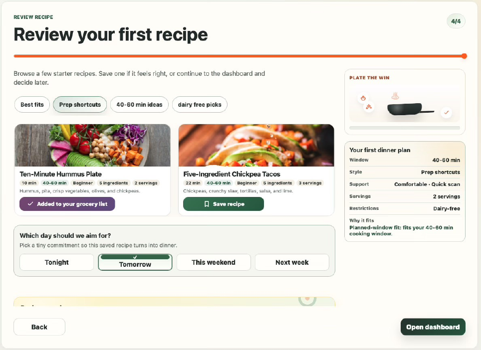
The day picker turns a saved recipe into a plan.
After Christina saves a recipe, she picks a loose target: tonight, tomorrow, this weekend, or next week.
The copy keeps it low-pressure: "Pick a tiny commitment." It doesn't ask her to promise. It just helps her choose a moment.
That matters because "cook once in 7 days" needs a place in her actual week.
She can still change her mind, but she leaves with a plan instead of a saved recipe she may forget.
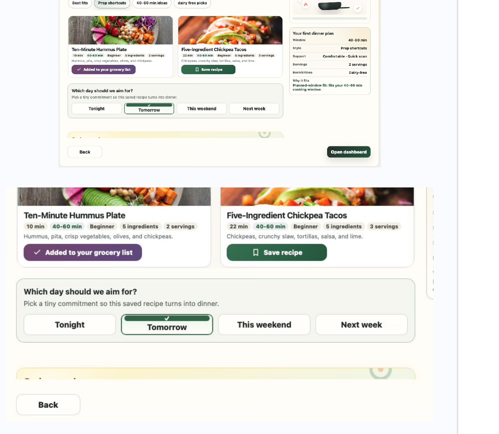
Interaction Decisions
I originally preferred one question per screen, but the brief pushed toward grouped screens.
One-question screens feel more like a conversation than a form. They lower cognitive load, make backtracking cleaner, and allow small trust-building moments like "Got it, we'll keep recipes under 30 minutes."
In testing, I'd compare grouped screens against one-question screens with auto-progression.
My hypothesis: grouped screens finish faster, but one-question screens create more confident answers and less drop-off. The key metric isn't just completion. It's how often users go back and change an answer.
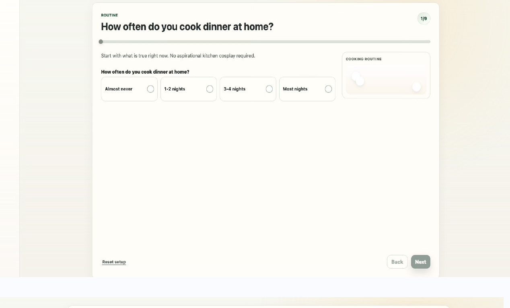
The range bar for time was dropped. Here's why.
The first version used a slider so users could choose any time between 10 and 60 minutes. It looked flexible, but it added friction.
A slider does not work well with auto-progression because there is no clear moment when the user is "done." It can also feel fiddly on mobile, where dragging a small handle takes more effort than tapping a clear option.
I replaced it with simple time pills because they are faster, easier to change, and closer to how people think after work: "I have 15 minutes," "I can do 30," or "I have more time tonight."
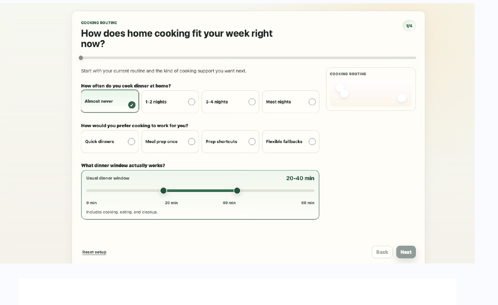
Why I did not open with the full recipe catalog
I did not start with the full recipe catalog because more choice would not help Christina make dinner. It would recreate the same problem she already has: too many options, not enough confidence, and no clear next step.
The app needs a little signal before it can be useful. Once it understands her time, comfort level, and preferences, it can show fewer recipes that actually fit.
That is why the catalog appears after onboarding, not before. The first recipe set is filtered, explained, and intentionally small. The goal is not to show everything. The goal is to make the first choice easy enough to act on.
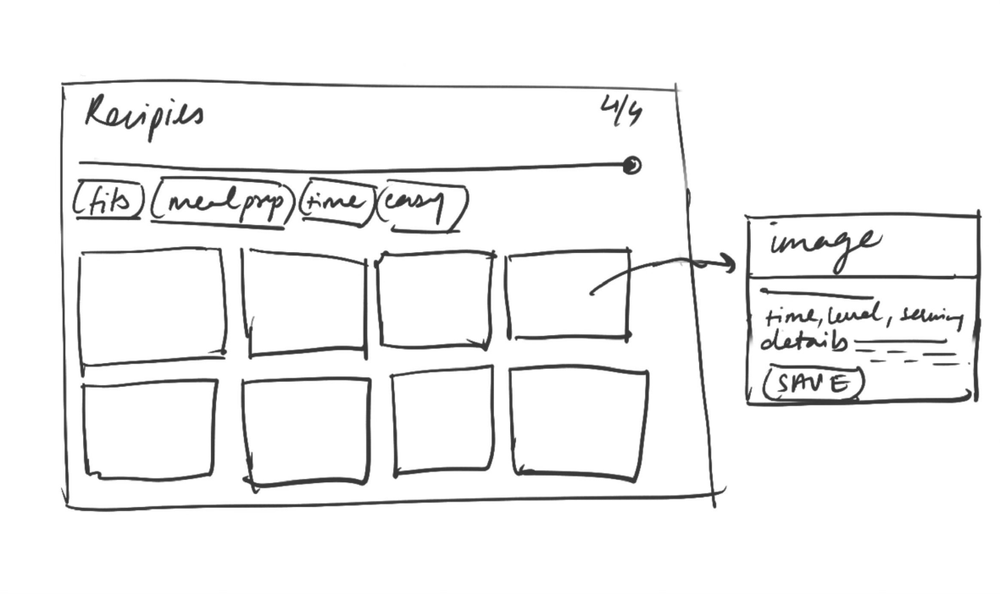
Why I designed a mobile state
The brief asked for a web app, but a web app still needs to work wherever the user opens it.
Christina may plan meals on a laptop during the weekend, but the actual cooking moment is more likely to happen on her phone at the kitchen counter. Those are different contexts: planning needs space to compare and browse; cooking needs clear steps, large tap targets, and less distraction.
Designing the mobile state made sure the experience works at the moment that matters most when she is actually trying to cook. Mobile constraints also forced cleaner decisions. If the layout, cards, and inputs work on a small screen, they can scale up. The reverse is not always true.
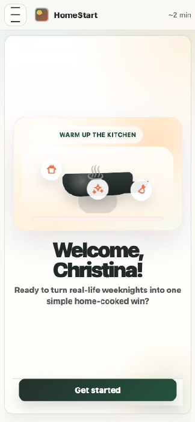
Grocery list: one action, not two
When a user saves a recipe, the button changes to "Added to your grocery list." This gives immediate feedback that two things happened: the recipe was saved, and the ingredients are ready for shopping.
I made this a single action because saving a recipe usually means the user is considering cooking it. Asking her to make a second decision would add friction at the exact moment the product should make things feel easier.
She can always remove items from the grocery list later, but the default should support the most useful next step.
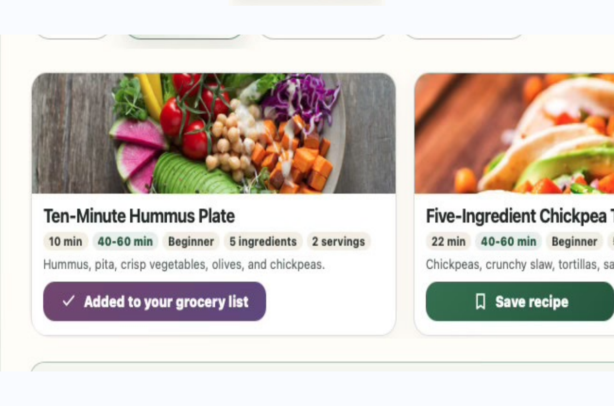
Dashboard Decisions
Time is not fixed. It is contextual.
The time a user sets during onboarding is only a starting point. Christina may choose "30 minutes" honestly, but real evenings change. Some nights she only has 15 minutes before delivery feels easier. Other nights she has low energy but can assemble something quickly and let it cook while she unwinds.
That is why time should be adjustable when she opens the app, not hidden in settings.
The mood filter supports this moment. Presets like "low commitment," "pantry rescue," and "family-friendly" turn time, effort, and ingredient complexity into one simple choice. Christina picks how tonight feels, and the app does the filtering.
Over time, the app can learn from those choices. If she often chooses "low commitment," that should become her default recommendation pattern, with room to explore when she has more energy.
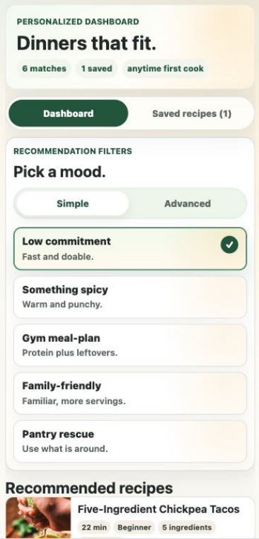
UI Decisions
Visual language: making the experience feel manageable
The visual language has one job: make the product feel approachable before the user reads a word.
This was a time-boxed exercise, so I made a deliberate trade-off. I prioritized the logic, structure, and interaction model over pixel-perfect visual polish. The screens communicate hierarchy, states, and flow clearly enough to present and test, but they are not ready for engineering handoff.
The next step would be a proper visual design pass: tighter spacing, a refined type scale, stronger responsive behavior, complete component states, edge cases, and a deeper UX audit.
One known issue is the desktop layout. The experience works better on mobile and mid-size screens, but on wider desktop viewports the content becomes too centered and the whitespace starts to feel empty rather than calm. A stronger solution would be a constrained content width around 720-800px, or a two-column layout where the main task stays on the left and contextual support, progress, or previews sit on the right.
I also used cards and pills instead of dropdowns, sliders, or free-text inputs. Cards keep the choices visible, low-pressure, and easy to change. Dropdowns hide options, sliders require precision, and free text can make users feel like there is a "correct" answer. The goal here is different: let Christina choose what feels right, then let the system do the work.
Research to Decisions
Every question maps to a signal. If it doesn't, it's not in the flow.
| Research signal | What I designed | Why |
|---|---|---|
| 65% identify as beginners | Skill level question with soft language + separate instruction style question | Skill and guidance preference are different signals. One beginner wants hand-holding; another wants just the steps. |
| 72% say time is biggest blocker | Time window question - pill options, not a slider | Pills work on mobile and enable auto-progression. Slider breaks both. |
| 54% abandon mid-recipe | Instruction style screen + recipe evidence tags on review screen | Reduce mid-recipe uncertainty before the first attempt, not after. |
| 41% want "healthier" but can't define it | Concrete levers: time, ingredient count, mood presets | Forced definition produces unreliable answers. Behaviour over time is a better signal. |
| 33% want under 5 ingredients | Ingredient tolerance question on food boundaries screen | Better early signal than cuisine preference for a beginner. |
| 28% cook for 2+ people | Default servings input, contextualised by recipe complexity | Scaling is hard for beginners. Obvious for experienced cooks on simple meals. |
| 22% have hard dietary restrictions | Dietary restrictions before soft preferences | Hard constraints must filter before preference-based ranking. Getting this wrong destroys trust immediately. |
What Testing Surfaced
One walkthrough, two useful signals
Because this was a time-boxed exercise, I did one informal walkthrough with someone close to the target profile: a busy professional who does not feel fully confident cooking on weeknights. This was not formal research, but it gave me a useful reality check on the prototype.
Skill level is not reliable at onboarding: He rated himself as above average, which felt optimistic for the type of user this product is designed around. That reinforced an important assumption: self-reported skill should not be treated as truth.
The onboarding answer should only seed the recommendation system. Over time, the app should adjust based on what the user saves, cooks, completes, and rates.
Serving size is useful only when it matters: For a simple hummus and pita plate, "serves 2" felt unnecessary. The user already understood how much to prepare. This is only informal testing, so a decision cannot be made based on that alone.
That does not mean serving size should be removed. It means it should be contextual. It should be more visible on recipes where scaling is harder, and quieter or absent on simple assembly meals where the answer is obvious.
Trade-offs
The decisions I'd revisit with more time.
| Trade-off made | What I'd validate |
|---|---|
| Grouped questions per screen (brief constraint) | One-question-per-screen with auto-progression test completion rate and answer confidence |
| Auto-progression vs. explicit Continue | Some users may feel they lost control. Test both; watch for backtracking rate. |
| Single dietary restriction for MVP | Multi-select in production. Overlapping restrictions are common and getting this wrong damages trust. |
| Recipe review before full dashboard | Test whether a small curated set reduces hesitation vs. whether users want to browse first. |
| Serving size always visible, not contextual | Future version: quieter on simple assembly meals, prominent on complex recipes requiring scaling. |
| No gamification at launch | Introduce lightweight positive reinforcement after first cook, not before. Streaks before a first win create failure states. |
| Dashboard not fully UI-finished | Visual design pass needed. Spacing system, component states, desktop two-column layout. |
What's Next
In short: Help users start small enough to succeed. One doable dinner is more valuable than a perfect profile.